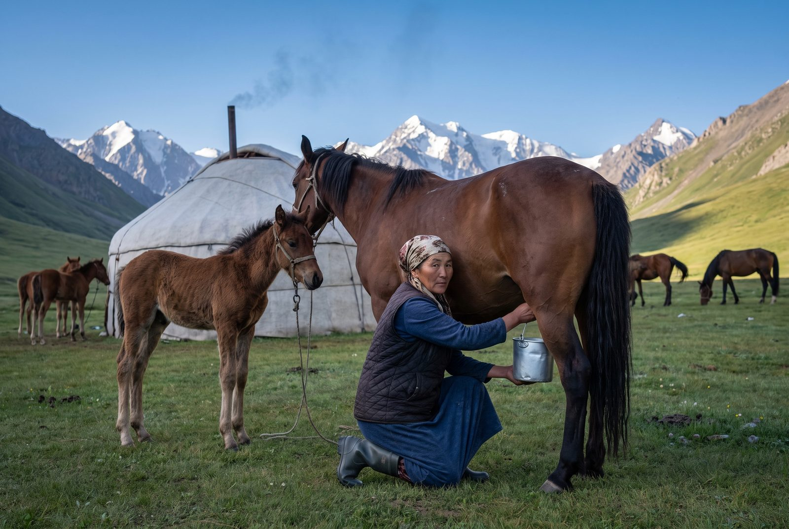

Главная / Кымыз
Кымыз Ak Bee
Ak bee значит «белая кобылица». Наш кымыз — от чонгторских кобылиц, которые пасутся на летних пастбищах Таласского Алатау. Их доят семьи, которые пасут табуны, а наутро кымыз разливают в Таласе.
Сезон кымыза — с мая по сентябрь
Кымыз Ak Bee разливают только пока кобылицы на летних пастбищах.
С джайлоо
Столько, сколько дают кобылицы
Кобылица даёт молоко для кымыза, только пока кормит жеребёнка. С мая, когда табуны поднимаются на летние пастбища, жеребят привязывают у юрт, а кобылиц доят примерно каждые два часа, шесть-семь раз в день. Этим заняты 212 семей чабанов, которые работают с нами.
Молоко заквашивают вчерашней закваской и мешают деревянной мутовкой, как было всегда, а потом в охлаждаемых бидонах спускают к нашему пункту приёмки у подножия пастбищ. В Таласе мы бережно пастеризуем его, даём ему дображивать и разливаем в стекло.
Когда в сентябре табуны спускаются, сезон заканчивается. Мы не замораживаем кобылье молоко и не делаем кымыз из сухого, поэтому зимой Ak Bee не бывает.

Два вида
Молодой и крепкий
Молодой кымыз (jash kımız)
Бродит около суток. Мягкий, молочный и шипучий, около 1 процента алкоголя. С него стоит начать тем, кто кымыз ещё не пробовал.
- 0,5 л
- 1 л
- около 1% алкоголя
Крепкий кымыз (küchtüü kımız)
Выдерживается три дня, пока не станет острым и кислым, до 2,4 процента алкоголя — чуть ниже тех 2,5 процента, с которых «Ирадстандарт» относит его к алкогольным напиткам. Кымыз чабанов, который вечером пьют из деревянной чаши.
- 0,5 л
- до 2,4% алкоголя
Кымыз — напиток брожения и содержит алкоголь. Мы не продаём его детям и просим не пить его перед тем, как сесть за руль. Храните в холоде и выпейте в течение пяти дней: со временем он становится крепче.

Кымыз мурундук
Первая чаша сезона
Каждый год, прежде чем первая бутылка покинет комбинат, мы приезжаем к семьям чабанов на кымыз мурундук. Аксакал даёт бата, первый кымыз делят между соседями, и только тогда начинается сезон.
Кобылицы
Чонгторская порода
Почти всё наше молоко — от кобылиц чонгторской породы, выносливой горной лошади высокогорных долин. Табуны держат семьи; мы платим за каждый литр и отправляем ветеринаров вместе с молоковозами.
С 1970-х
Из санатория в супермаркет
Сначала комбинат делал кымыз для государственных санаториев, где им лечили лёгкие и желудок. Название Ak Bee и стеклянная бутылка появились в 2009 году. Сегодня он на полках в Таласе, Нуржане и Ийык-Джаныле.
Семьи чабанов
Доите кобылиц для Ak Bee
Летние договоры с семьями чабанов мы подписываем каждый апрель. В 2026 году мы платим 9,80 сома за литр кобыльего молока, забираем его каждый день у подножия пастбищ, выдаём охлаждаемые бидоны и рассчитываемся каждые десять дней.